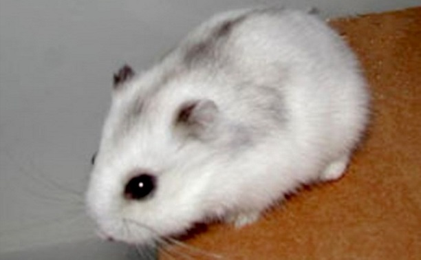
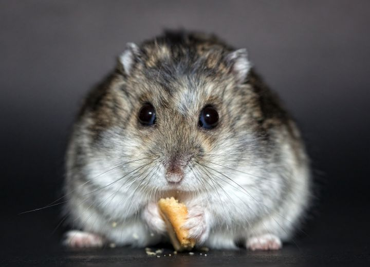

Хомячки
Эти миниатюрные питомцы ведут ночной образ жизни: днем хомяк преимущественно спит, в темное время суток его активность возрастает. Зверек начинает активно крутить колесо, перетаскивать свои запасы с места на место, грызть клетку. Словом, создает достаточно много шума. Поэтому на ночь клетку с грызуном лучше убрать из комнаты, где спите вы или ваши дети..
Как правило, характер у сирийского хомяка добродушный. В этом заключается его основное преимущество перед другими видами. Его достаточно легко приучить к рукам, при этом агрессию зверек будет проявлять только в случае опасности.
Джунгарики очень милые, активные и любознательные.
Не требуют сложных условий содержания, какого-то особенного ухода, неприхотливы в еде.
Джунгарики бывают разные
- Сапфир – серо-голубой окрас
- Жемчуг – самый редкий. Это белый хомячок. 
- стандартная – коричнево-серый с белым брюшком; 
- мандарин – кремово-рыжий.

Что нельзя джунгарикам
- хвойные ветви; различные колбасы и сосиски;
- крупы (пшеница, овес, ячмень, гречка);
- семена (дыни, тыквы, подсолнечника);
- сухофрукты (груша, изюм, курага, сушеные яблоки);
- ростки (бамбука, люцерны, пшеницы);